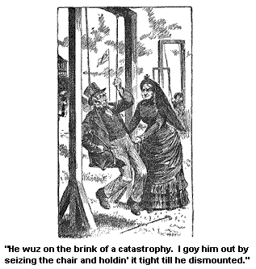

LAKE GEORGE AND MOUNT McGREGOR.
It wuz on a nice pleasant day that Ardelia Tuit, Josiah Allen, and me, met by previous agreement quite early in the mornin', A. M., and sot out for Lake George. It is so nigh, that you can step onto the cars, and go out and see George any time of day.
It seemed to me jest as if George wuz glad we had come, for there wuz a broad happy smile all over his face, and a sort of a dimplin' look, as if he wanted to laugh right out. All the beckonin' shores and islands, with their beautiful houses on 'em, and the distant forests, and the trees a bendin' over George, all seemed to sort a smile out a welcome to us. We had a most beautiful day, and got back quite late in the afternoon, P. M.
And the next day, a day heavenly calm and fair, Josiah Allen and me sot sail for Mount McGregor -- that mountain top that is lifted up higher in the hearts of Americans than any other peak on the continent -- fur higher. For it is the place where the memory of a Hero lays over all the peaceful landscape like a inspiration and a benediction, and will rest there forever.
The railroad winds round and round the mountain sometimes not seemin'ly goin' up at all, but gradually a movin' in' on towards the top, jest as this brave Hero did in his career. If some of the time he didn't seem to move on, or if some of the time he seemed to go back for a little, yet there wuz a deathless fire inside on him, a power, a strength that kep' him a goin' up, up, up, and drawin' the nation up with him onto the safe level ground of Victory.
We got pleasant glimpses of beauty, pretty pictures on't, every little while as we wended our way on up the mountains. Anon we would go round a curve, a ledge of rocks mebby, and lo! far off a openin' through the woods would show us a lovely picture of hill and dell, blue water and blue mountains in the distance. And then a green wood picture, shut in and lonely, with tall ferns, and wild flowers, and thick green grasses under the bendin' trees. Then fur down agin' a picture of a farmhouse, sheltered and quiet, with fields layin' about it green and golden.
But anon, we reached the pretty little lonesome station, and there we wuz on top of Mount McGregor. We disembarked from the cars and wended our way up the hill up the windin' foot path, wore down by the feet of pilgrims from every land, quite a tegus walk though beautiful, up to the good-lookin', and good appearin' tarven.
I would fain have stopped at that minute at the abode the Hero had sanctified by his last looks. But my companion said to me that he wuz in nearly a starvin' state. Now it wuzn't much after 11 A. M. forenoon, and I felt that he would not die of starvation so soon. But his looks wuz pitiful in the extreme and he reminded me in a sort of a weak voice that he didn't eat no breakfast hardly.
I sez truthfully, "I didn't notice it, Josiah." But sez I, "I will accompany you where your hunger can be slaked." So we went straight up to the tarven.
But I would stop a minute in front of it, to see the lovely, lovely seen that wuz spread out before our eyes. For fur off could we see milds and milds of the beautiful country a layin' fur below us. Beautiful landscape, dotted with crystal lakes, laved by the blue Hudson and bordered by the fur-away mountains.
It wuz a fair seen, a fair seen. Even Josiah wuz rousted up by it, and forgot his hunger. I myself wuz lost in the contemplation on it, and entirely by the side of myself. So much so, that I forgot where I wuz, and whether I wuz a wife or a widow, or what I wuz.
But anon, as my senses came back from the realm of pure beauty they had been a traversin', I recollected that I wuz a wife, that Providence and Elder Minkley had placed a man in my hands to take care on; and I see he wuz gone from me, and I must look him up.
And I found that man in one of the high tallish lookin' swing chairs that wuz a swingin' from high poles all along the brow of the hill. They looked some like a stanchol for a horse, and some like a pair of galluses that criminals are hung on.
Josiah wuzn't able to work it right and it did require a deep mind to get into one without peril. And he wuz on the brink of a catastrophe. I got him out by siezin' the chair and holdin' it tight, till he dismounted from it -- which he did with words unadapted to the serenity of the atmosphere. And then we went out the broad pleasant door-yard up into the tarven, and my companion got some coffee, and some refreshments, to refresh ourselves with. And then he, feelin' clever and real affectionate to me (owin' partly I s'pose to the good dinner), we wended our way down to the cottage where the Hero met his last foe and fell victorious.

We went up the broad steps onto the piazza, and I looked off from it, and over all the landscape under the soft summer sky, lay that same beautiful tender inspired memory. It lay like the hush that follows a prayer at a dyin' bed. Like the glow that rests on the world when the sun has gone down in glory. Like the silence full of voices that follows a oriter's inspired words.
The air, the whole place, thrilled with that memory, that presence that wuz with us, though unseen to the eyes of our spectacles. It followed us through the door way, it went ahead on us into the room where the pen wuz laid down for the last time, where the last words wuz said. That pen wuz hung up over the bed where the tired head had rested last. By the bedside wuz the candle blowed out, when he got to the place where it is so light they don't need candles. The watch stopped at the time when he begun to recken time by the deathless ages of immortality. And as I stood there, I said to myself, "I wish I could see the faces that wuz a bendin' over this bed, August 11th, 1885."
All the ministerin' angels, and heroes, and conquerors, all a waitin' for him to join 'em. All the Grand Army of the Republic, them who fell in mountain and valley; the lamented and the nameless, all, all a waitin' for the Leader they loved, the silent, quiet man, whose soul spoke, who said in deeds what weaker spirits waste in language.
I wished I could see the great army that stood around Mount McGregor that day. I wished I could hear the notes of the immortal revelee, which wuz a soundin' all along the lines callin' him to wake from his earth sleep into life -- callin' him from the night here, the night of sorrow and pain, into the mornin'.
And as I lifted my eyes, the eyes of the General seemed to look cleer down into my soul, full of the secrets that he could tell now, if he wanted to, full of the mysteries of life, the mysteries of death. The voiceless presence that filled the hull landscape, earth and air, looked at us through them eyes, half mournful, prophetic, true and calm, they wuz a lookin' through all the past, through all the future. What did they see there? I couldn't tell, nor Josiah.
In another room wuz the flowers from many climes. Flowers strewed onto the stage from hands all over the world, when the foot lights burned low, and the dark curtain went down for the last time on the Hero. Great masses of flowers, every one on 'em, bearin' the world's love, the world's sorrow over our nation's loss.
I had a large quantity of emotions as I stood there, probably as many as 48 a minute for quite a spell, and that is a large number of emotions to have, when the size of 'em is as large as the sizes of 'em wuz. I thought as I stood there of what I had hearn the Hero said once in his last illness, that, liftin' up his grand right arm that had saved the Nation, he said, "I am on duty from four to six."
Yes, thinkses I, he wuz on duty all through the shadows and the darkness of war, all through the peril, and the heartache, and the wild alarm of war, calm and dauntless, he wuz on duty till the mornin' of peace came, and the light wuz shinin'.
On duty through the darkness. No one believed, no one dared to think that if peril had come again to the country, he would not have been ready,-- ready to face danger and death for the people he had saved once, the people whom he loved, because he had dared death for 'em.
Yes, he wuz on duty.
There wuz a darker shadow come to him than any cloud that ever rose over a battle-field when, honest and true himself as the light, he still stood under the shadow of blame and impendin' want, stood in the blackest shadow that can cover generous, faithful hearts, the heart-sickenin' shadow of ingratitude; when the people he had saved from ruin hesitated, and refused to give him in the time of his need the paltry pension, the few dollars out of the millions he had saved for them, preferring to allow him, the greatest hero of the world, the man who had represented them before the nations, to sell the badges and swords he had worn in fightin' their battles, for bread for himself and wife.
But he wuz on duty all through this night. Patient, uncomplainin'. And not one of these warriors fightin' their bloodless battle of words aginst him, would dare to say that he would not have been ready at any minute, to give his life agin for these very men, had danger come to the country and they had needed him.
And when hastened on by the shock, and the suspense, death seemed to be near him, so near that it seemed as if the burden must needs be light -- the tardy justice that came to him must have seemed like an insult, but if he thought so he never said it; no, brave and patient, he wuz on duty.
And all through the long, long time that he looked through the shadows for a more sure foe than had ever lain in Southern ambush for him, he wuz on duty. Not an impatient word, not an anxious word. Of all the feerin', doubtin', hopin', achin' hearts about him, he only wuz calm.
For, not only his own dear ones, but the hull country, friends and foes alike, as if learnin' through fear of his loss how grand a hero he wuz, and how greatly and entirely he wuz beloved by them all, they sent up to Heaven such a great cloud of prayers for his safety as never rose for any man. But he only wuz calm, while the hull world wuz excited in his behalf.
For the sight of his patient work, the sight of him who stopped dyin' (as it were) to earn by his own brave honest hand the future comfort of his family, amazed, and wonderin' at this spectacle, one of the greatest it seems to me that ever wuz seen on earth, the hull nation turned to him in such a full hearted love, and admiration, and worship, that they forgot in their quicker adorin' heart-throbs, the slower meaner throbs they had gin him, this same brave Hero, jest as brave and true-hearted in the past as he wuz on his grand death-bed.
They forgot everything that had gone by in their worship, and I don't know but I ort to. Mebby I had. I shouldn't wonder a mite if I had. But all the while, all through the agony and the labor, and when too wearied he lay down the pen, -- he wuz on duty.
Waitin' patiently, fearlessly, till he should see in the first glow of the sunrise the form of the angel comin' to relieve his watch, the tall, fair angel of Rest, that the Great Commander sent down in the mornin' watches to relieve his weary soldier,that divinest angel that ever comes to the abode of men, though her beauty shines forever through tears, led by her hand, he has left life's battle-field forever; and what is left to this nation but memory, love, and mebby remorse.
But little matters it to him, the Nation's love or the Nation's blame, restin' there by the calm waters he loved. The tides come in, and the tides go out; jest as they did in his life; the fickle tide of public favor that swept by him, movin' him not on his heavenly mission of duty and patriotism.
The tides go out, and the tides come in; the wind wails and the wind sings its sweet summer songs; but he does not mind the melody or the clamor. He is resting. Sleep on, Hero beloved, while the world wakes to praise thee.
Wall, we sot sail from Mount McGregor about half-past four P. M., afternoon. And we wound round and round the mountain side jest as he did, only goin' down into the valley instid of upwards. But the trees that clothed the bare back of the mountain looked green and shinin' in the late afternoon sunlight, and the fields spread out in the valley looked green and peaceful under the cool shadows of approachin' sunset.
And right in the midst of one of these fields, all full of white daisies, the cars stopped and the conductor sung out: "Five minutes' stop at Daisy station. Five minutes to get out and pick daisies."
And sez Josiah to me in gruff axents, when I asked him if he wuz goin' to get out and pick some. Sez he, "Samantha, no man can go ahead of me in hatin' the dumb weeds, and doin' his best towards uprootin' 'em in my own land; and I deeply sympathize with any man who is over run by 'em. But why am I beholdin' to the man that owns this lot? Why should I and all the rest of this carload of folks, all dressed up in our best too, lay hold and weed out these infernal nuisances for nothin'?"
Yes, he said these fearfully profane words to me and I herd him in silence, for I did not want to make a seen in public. Sez I, "Josiah, they are pickin' 'em because they love 'em."
"Love 'em!" Oh, the fearful, scornful unbelievin' look that came over my pardner's face, as I said these peaceful words to him. And he added a expletive which I am fur from bein' urged to ever repeat. It wuz sinful.
"Love 'em!" Agin he sez. And agin follerd a expletive that wuz still more forcible, and still more sinful. And I felt obliged to check him which I did. And after a long parlay, in which I used my best endeavors of argument and reason to convince him that I wuz in the right on't, I see he wuzn't convinced. And then I spoke about its bein' fashionable to get out and pick 'em, and he looked different to once. I could see a change in him. All my arguments of the beauty and sweetness of the posies had no effect, but when I said fashionable, he faltered, and he sez, "Is it called a genteel diversion?"
And I sez, "Yes."
And finally he sez, "Wall, I s'pose I can go out and pick some for you. Dumb their dumb picters."
Sez I, "Don't go in that spirit, Josiah Allen."
"Wall, I shall go in jest that sprit," he snapped out, "if I go at all." And he went.
But oh! it wuz a sight to set and look on, and see the look onto his face, as he picked the innocent blossoms. It wuz a look of such deep loathin', and hatred, combined with a sort of a genteel, fashionable air.
Altogether it wuz the most curius, and strange look, that I ever see outside of a menagery of wild animals. And he had that same look onto his face as he came in and gin 'em to me. He had yanked'em all up by their roots too, which made the Bokay look more strange. But I accepted of it in silence, for I see by his mean that he wuz not in a condition to brook another word.
And I trembled when a bystander a standin' by who wuz arrangin' a beautiful bunch of 'em, a handlin' 'em as flowers ort to be handled, as if they had a soul, and could feel a rough or tender touch, -- this man sez to Josiah, "I see that you too love this beautiful blossom."
I wuz glad the man's eyes wuz riveted onto his Bokay, for the ferocity of Josiah Allen's look wuz sunthin' fearful. He looked as if he could tear him lim' from lim'.
And I hastily drawed Josiah to a seat at the other end of the car, and voyalently, but firmly, I drawed his attention off onto Religion.
I sez, "Josiah, do you believe we had better paint the steeple of the meetin'-house, white or dark colered?"
This wuz a subject that had rent Jonesville to its very twain. And Josiah had been fearfully exercised on it. And this plan of mine succeeded. He got eloquent on it, and I kinder held off, and talked offish, and let him convince me.
I did it from principle.